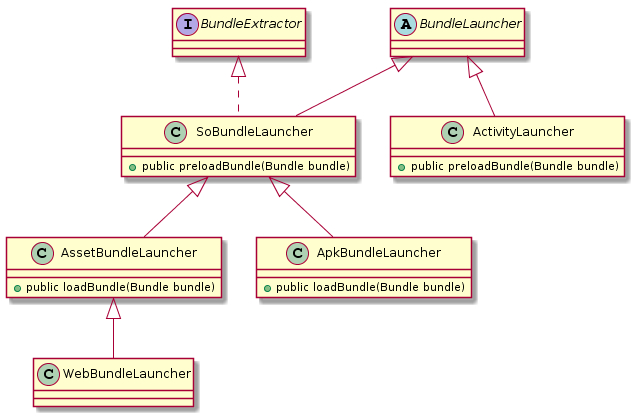

接下来的一系列文件将会从源码角度来分析Small的架构以及插件化原理及其实现。
整体架构
Small里面比较核心的类有下面三个：
- Small：接口类，提供用户能使用的各类接口
- Bundle：代表插件类，保存了插件的全部信息
- BundleLauncher：插件加载类，根据加载的不同插件类型，有多个子类，如下图：

初始化
先来看一下宿主 App 中的初始化部分，主要在 Application 和 LaunchActivity 中进行。我们把在 Application 处理的称为第一阶段，在 LaunchActivity 中进行的称为第二阶段和第三阶段。
第一阶段：预处理
public class Application extends android.app.Application {
public Application() {
// This should be the very first of the application lifecycle.
// It's also ahead of the installing of content providers by what we can avoid
// the ClassNotFound exception on if the provider is unimplemented in the host.
Small.preSetUp(this);
}
@Override
public void onCreate() {
super.onCreate();
// Optional
Small.setBaseUri("http://code.wequick.net/small-sample/");
Small.setWebViewClient(new MyWebViewClient());
//指定是否从 assets 读取插件
Small.setLoadFromAssets(BuildConfig.LOAD_FROM_ASSETS);
}
}
在 Application 构造函数中调用了 Small.preSetUp(this) 来进行一些设置的工作：
public static void preSetUp(Application context) {
if (sContext != null) {
return;
}
sContext = context;
// 注册BundleLauncher
registerLauncher(new ActivityLauncher());
registerLauncher(new ApkBundleLauncher());
registerLauncher(new WebBundleLauncher());
Bundle.onCreateLaunchers(context);
}
首先注册了一些默认的 BundleLauncher，保存在 sBundleLaunchers 静态变量中。然后调用 Bundle.onCreateLaunchers(context) 来调用 BundleLauncher.onCreate()方法。
在几个 BundleLauncher 的子类中，ApkBundleLauncher 重新实现了 onCreate()方法。
@Override
public void onCreate(Application app) {
super.onCreate(app);
Object/*ActivityThread*/ thread;
List<ProviderInfo> providers;
Instrumentation base;
ApkBundleLauncher.InstrumentationWrapper wrapper;
Field f;
// 通过反射获取当前 ActivityThread 对象
thread = ReflectAccelerator.getActivityThread(app);
// 替换 mInstrumentation 变量，关键点在这里，下面会详述
try {
f = thread.getClass().getDeclaredField("mInstrumentation");
f.setAccessible(true);
base = (Instrumentation) f.get(thread);
wrapper = new ApkBundleLauncher.InstrumentationWrapper(base);
f.set(thread, wrapper);
} catch (Exception e) {
throw new RuntimeException("Failed to replace instrumentation for thread: " + thread);
}
// 通过反射替换ActivityThread 的 Message Handler mH变量的 mCallback 为ActivityThreadHandlerCallback
// 用于恢复Activity Info 到真实的Activity
ensureInjectMessageHandler(thread);
// 获取该APP的 ProviderInfo 列表
try {
f = thread.getClass().getDeclaredField("mBoundApplication");
f.setAccessible(true);
Object/*AppBindData*/ data = f.get(thread);
f = data.getClass().getDeclaredField("providers");
f.setAccessible(true);
providers = (List<ProviderInfo>) f.get(data);
} catch (Exception e) {
throw new RuntimeException("Failed to get providers from thread: " + thread);
}
// 将这些变量保存起来
sActivityThread = thread;
sProviders = providers;
sHostInstrumentation = base;
sBundleInstrumentation = wrapper;
}
InstrumentationWrapper 继承自 Instrumentation 并覆盖了下面几个方法：
execStartActivity()
callActivityOnCreate()
callActivityOnStop()
callActivityOnDestroy()
onException()
为什么说替换 Instrumentation 对象是重头戏呢？这里我们先了解一些这个类。
先看一下官方文档对这个类的解释，该类跟踪 Application 及 Activity 的整个生命周期，它的一些方法在 Application 及 Activity 所有生命周期函数的调用中，都会先调用这些方法，因此，得到了这个对象，我们就可以进入并跟踪 Application 和 Activity 的生命周期流程。
Small 想要做到动态注册 Activity，首先在宿主 Manifest 中注册一个命名特殊的占坑 Activity 来欺骗 startActivityForResult 以获得生命周期，再欺骗 performLaunchActivity 来获得插件 Activity 实例，又为了处理之间的信息传递，因此有了后面的 ActivityThreadHandlerCallback。
我们可以在 small/src/main/AndroidManifest.xml 中找到这些占坑位的 Activity： A、A1、A2....A33等。
<manifest xmlns:android="http://schemas.android.com/apk/res/android"
package="net.wequick.small">
<!-- permission for web view -->
<uses-permission android:name="android.permission.INTERNET"/>
<application>
<!-- Stub Activities -->
<!-- 1 standard mode -->
<activity android:name=".A"
android:configChanges="locale|fontScale|keyboard|keyboardHidden|layoutDirection|mcc|mnc|navigation|orientation|screenLayout|screenSize|smallestScreenSize|touchscreen|uiMode"/>
<activity android:name=".A1" android:theme="@android:style/Theme.Translucent"
android:configChanges="locale|fontScale|keyboard|keyboardHidden|layoutDirection|mcc|mnc|navigation|orientation|screenLayout|screenSize|smallestScreenSize|touchscreen|uiMode"/>
<!-- 4 singleTop mode -->
<activity android:name=".A10" android:launchMode="singleTop"
android:configChanges="locale|fontScale|keyboard|keyboardHidden|layoutDirection|mcc|mnc|navigation|orientation|screenLayout|screenSize|smallestScreenSize|touchscreen|uiMode"/>
<activity android:name=".A11" android:launchMode="singleTop"
android:configChanges="locale|fontScale|keyboard|keyboardHidden|layoutDirection|mcc|mnc|navigation|orientation|screenLayout|screenSize|smallestScreenSize|touchscreen|uiMode"/>
<activity android:name=".A12" android:launchMode="singleTop"
android:configChanges="locale|fontScale|keyboard|keyboardHidden|layoutDirection|mcc|mnc|navigation|orientation|screenLayout|screenSize|smallestScreenSize|touchscreen|uiMode"/>
<activity android:name=".A13" android:launchMode="singleTop"
android:configChanges="locale|fontScale|keyboard|keyboardHidden|layoutDirection|mcc|mnc|navigation|orientation|screenLayout|screenSize|smallestScreenSize|touchscreen|uiMode"/>
<!-- 4 singleTask mode -->
<activity android:name=".A20" android:launchMode="singleTask"
android:configChanges="locale|fontScale|keyboard|keyboardHidden|layoutDirection|mcc|mnc|navigation|orientation|screenLayout|screenSize|smallestScreenSize|touchscreen|uiMode"/>
<activity android:name=".A21" android:launchMode="singleTask"
android:configChanges="locale|fontScale|keyboard|keyboardHidden|layoutDirection|mcc|mnc|navigation|orientation|screenLayout|screenSize|smallestScreenSize|touchscreen|uiMode"/>
<activity android:name=".A22" android:launchMode="singleTask"
android:configChanges="locale|fontScale|keyboard|keyboardHidden|layoutDirection|mcc|mnc|navigation|orientation|screenLayout|screenSize|smallestScreenSize|touchscreen|uiMode"/>
<activity android:name=".A23" android:launchMode="singleTask"
android:configChanges="locale|fontScale|keyboard|keyboardHidden|layoutDirection|mcc|mnc|navigation|orientation|screenLayout|screenSize|smallestScreenSize|touchscreen|uiMode"/>
<!-- 4 singleInstance mode -->
<activity android:name=".A30" android:launchMode="singleInstance"
android:configChanges="locale|fontScale|keyboard|keyboardHidden|layoutDirection|mcc|mnc|navigation|orientation|screenLayout|screenSize|smallestScreenSize|touchscreen|uiMode"/>
<activity android:name=".A31" android:launchMode="singleInstance"
android:configChanges="locale|fontScale|keyboard|keyboardHidden|layoutDirection|mcc|mnc|navigation|orientation|screenLayout|screenSize|smallestScreenSize|touchscreen|uiMode"/>
<activity android:name=".A32" android:launchMode="singleInstance"
android:configChanges="locale|fontScale|keyboard|keyboardHidden|layoutDirection|mcc|mnc|navigation|orientation|screenLayout|screenSize|smallestScreenSize|touchscreen|uiMode"/>
<activity android:name=".A33" android:launchMode="singleInstance"
android:configChanges="locale|fontScale|keyboard|keyboardHidden|layoutDirection|mcc|mnc|navigation|orientation|screenLayout|screenSize|smallestScreenSize|touchscreen|uiMode"/>
<!-- Web Activity -->
<activity android:name=".webkit.WebActivity"
android:screenOrientation="portrait"
android:windowSoftInputMode="stateHidden|adjustPan"
android:hardwareAccelerated="true"/>
</application>
</manifest>
所作的这一切都是为了实现动态注册 Activity，如果你把插件里面的 Activity 都在宿主的 AndroidManifest.xml 文件里面都申明一下，那么上面的这些 Hook 的工作就可以省去了。
这也就是 Small 插件化的基本原理，该原理部分后面会有博客详细介绍。
第二阶段：加载插件
一些配置工作
在 LaunchActivity 的 onStart() 方法中调用了 Small.setUp()。
public class LaunchActivity extends Activity {
@Override
protected void onStart() {
...
Small.setUp(LaunchActivity.this, new net.wequick.small.Small.OnCompleteListener() {
@Override
public void onComplete() {
long tEnd = System.nanoTime();
se.putLong("setUpFinish", tEnd).apply();
long offset = tEnd - tStart;
if (offset < MIN_INTRO_DISPLAY_TIME) {
// 这个延迟仅为了让 "Small Logo" 显示足够的时间, 实际应用中不需要
getWindow().getDecorView().postDelayed(new Runnable() {
@Override
public void run() {
// 启动main插件
Small.openUri("main", LaunchActivity.this);
finish();
}
}, (MIN_INTRO_DISPLAY_TIME - offset) / 1000000);
} else {
Small.openUri("main", LaunchActivity.this);
finish();
}
}
});
}
在 Small.setUp() 方法内部主要调用了 Bundle.loadLaunchableBundles(listener)。
protected static void loadLaunchableBundles(Small.OnCompleteListener listener) {
Context context = Small.getContext();
boolean synchronous = (listener == null);
if (synchronous) {
loadBundles(context);
return;
}
// Asynchronous
if (sThread == null) {
sThread = new LoadBundleThread(context);
sHandler = new LoadBundleHandler(listener);
sThread.start();
}
}
由于我们注册了了 Small.OnCompleteListener，这里会开启一个线程来调用 loadBundles() 方法。
private static void loadBundles(Context context) {
JSONObject manifestData;
try {
//获取 /data/data/<application package>/files 目录下的 bundle.json
File patchManifestFile = getPatchManifestFile();
//获取 SharedPreferences 存储的bundle.json文件
String manifestJson = getCacheManifest();
if (manifestJson != null) {
// 加载SharedPreferences中的缓存的文件并保存到patchManifestFile文件中
if (!patchManifestFile.exists()) patchManifestFile.createNewFile();
PrintWriter pw = new PrintWriter(new FileOutputStream(patchManifestFile));
pw.print(manifestJson);
pw.flush();
pw.close();
// 清除SharedPreferences中的缓存
setCacheManifest(null);
} else if (patchManifestFile.exists()) {
// 从patchManifestFile中读取数据
BufferedReader br = new BufferedReader(new FileReader(patchManifestFile));
StringBuilder sb = new StringBuilder();
String line;
while ((line = br.readLine()) != null) {
sb.append(line);
}
br.close();
manifestJson = sb.toString();
} else {
// 从 `assets/bundle.json' 加载
InputStream builtinManifestStream = context.getAssets().open(BUNDLE_MANIFEST_NAME);
int builtinSize = builtinManifestStream.available();
byte[] buffer = new byte[builtinSize];
builtinManifestStream.read(buffer);
builtinManifestStream.close();
manifestJson = new String(buffer, 0, builtinSize);
}
manifestData = new JSONObject(manifestJson);
} catch (Exception e) {
e.printStackTrace();
return;
}
// 解析数据
Manifest manifest = parseManifest(manifestData);
if (manifest == null) return;
setupLaunchers(context);
loadBundles(manifest.bundles);
}
在 loadBundles() 方法中首先会解析 bundle.json 数据，这个数据可能会保存在三个地方，它们的读取是有优先级的，SharedPreferences缓存>App DATA File>Assets。
然后调用 setupLaunchers() 设置前面在 preSetup() 方法中注册的几个 BundleLauncher。
protected static void setupLaunchers(Context context) {
if (sBundleLaunchers == null) return;
for (BundleLauncher launcher : sBundleLaunchers) {
launcher.setUp(context);
}
}
我们分别看一下这几个 BundleLauncher 的 setUp() 方法都做了什么工作：
- ActivityLauncher.setUp()
这里是将在宿主App里面注册的 Activity 添加到 sActivityClasses 中去，这里包括了 app、app+stub、small下面 AndroidMenifest.xml里面注册的 Activity，当然就包括了前面说的占坑位的几个 Activity。
@Override
public void setUp(Context context) {
super.setUp(context);
// Read the registered classes in host's manifest file
File sourceFile = new File(context.getApplicationInfo().sourceDir);
BundleParser parser = BundleParser.parsePackage(sourceFile, context.getPackageName());
parser.collectActivities();
ActivityInfo[] as = parser.getPackageInfo().activities;
if (as != null) {
sActivityClasses = new HashSet<String>();
for (ActivityInfo ai : as) {
sActivityClasses.add(ai.name);
}
}
}
- ApkBundleLauncher.setUp()
这里是对通过动态代理对所有经过 TaskStackBuilder 创建的 PendingIntent 进行 Hook，调用 wrapIntent 用占坑 Activity 来代替真正的 Activity。
另外还有个方法 Small.wrapIntent(Intent)，不是通过TaskStackBuilder 创建的 PendingIntent 需要调用这个方法来进行处理。
@Override
public void setUp(Context context) {
super.setUp(context);
Field f;
// AOP for pending intent
try {
f = TaskStackBuilder.class.getDeclaredField("IMPL");
f.setAccessible(true);
final Object impl = f.get(TaskStackBuilder.class);
InvocationHandler aop = new InvocationHandler() {
@Override
public Object invoke(Object proxy, Method method, Object[] args) throws Throwable {
Intent[] intents = (Intent[]) args[1];
for (Intent intent : intents) {
sBundleInstrumentation.wrapIntent(intent);
intent.setAction(Intent.ACTION_MAIN);
intent.addCategory(Intent.CATEGORY_LAUNCHER);
}
return method.invoke(impl, args);
}
};
Object newImpl = Proxy.newProxyInstance(context.getClassLoader(), impl.getClass().getInterfaces(), aop);
f.set(TaskStackBuilder.class, newImpl);
} catch (Exception ignored) {
ignored.printStackTrace();
}
}
- WebBundleLauncher.setUp()
看到注释这样解释：在android 7.0以后的版本中，当第一次创建WebView的时候，它会用WebView的Assets路径替换掉原Application Assets路径，这里就提前在这里先创建一个WebView来避免这个事件的发生。
@Override
public void setUp(Context context) {
super.setUp(context);
if (Build.VERSION.SDK_INT < 24) return;
Bundle.postUI(new Runnable() {
@Override
public void run() {
// In android 7.0+, on firstly create WebView, it will replace the application
// assets with the one who has join the WebView asset path.
// If this happens after our assets replacement,
// what we have done would be come to naught!
// So, we need to push it enOOOgh ahead! (#347)
new android.webkit.WebView(Small.getContext());
}
});
}
在 setupLaunchers(context) 方法执行完以后，就会调用 loadBundles(manifest.bundles) 方法来加载插件。
加载插件
先来看一下 Bundle.loadBundles(List<Bundle> bundles)方法，这个方法的主要工作就是在注册的所有 BundleLauncher 中为 bundles 列表中的所有 Bundle 找到适合它们的 BundleLauncher，
private static void loadBundles(List<Bundle> bundles) {
sPreloadBundles = bundles;
// 1. 为每个Bundle寻找合适的BundleLauncher
for (Bundle bundle : bundles) {
bundle.prepareForLaunch();
}
// Handle I/O
if (sIOActions != null) {
ExecutorService executor = Executors.newFixedThreadPool(sIOActions.size());
for (Runnable action : sIOActions) {
executor.execute(action);
}
executor.shutdown();
try {
if (!executor.awaitTermination(LOADING_TIMEOUT_MINUTES, TimeUnit.MINUTES)) {
throw new RuntimeException("Failed to load bundles! (TIMEOUT > "
+ LOADING_TIMEOUT_MINUTES + "minutes)");
}
} catch (InterruptedException e) {
e.printStackTrace();
}
sIOActions = null;
}
// Wait for the things to be done on UI thread before `postSetUp`,
// as on 7.0+ we should wait a WebView been initialized. (#347)
while (sRunningUIActionCount != 0) {
try {
Thread.sleep(100);
} catch (InterruptedException e) {
e.printStackTrace();
}
}
// Notify `postSetUp' to all launchers
for (BundleLauncher launcher : sBundleLaunchers) {
launcher.postSetUp();
}
// Wait for the things to be done on UI thread after `postSetUp`,
// like creating a bundle application.
while (sRunningUIActionCount != 0) {
try {
Thread.sleep(100);
} catch (InterruptedException e) {
e.printStackTrace();
}
}
// Free all unused temporary variables
for (Bundle bundle : bundles) {
if (bundle.parser != null) {
bundle.parser.close();
bundle.parser = null;
}
bundle.mBuiltinFile = null;
bundle.mExtractPath = null;
}
}
prepareForLaunch()
我们先来看一下 Bundle.prepareForLaunch() 方法，这里是要在 sBundleLaunchers 中为当前的 Bundle 找到一个合适的 BundleLauncher 并赋值给 mApplicableLauncher，并开始解析插件。
protected void prepareForLaunch() {
if (mIntent != null) return;
if (mApplicableLauncher == null && sBundleLaunchers != null) {
for (BundleLauncher launcher : sBundleLaunchers) {
if (launcher.resolveBundle(this)) {
mApplicableLauncher = launcher;
break;
}
}
}
}
这里又分别调用了 sBundleLaunchers 中各个 BundleLauncher 的 resolveBundle() 方法。
public boolean resolveBundle(Bundle bundle) {
if (!preloadBundle(bundle)) return false;
loadBundle(bundle);
return true;
}
各个 BundleLauncher 都分别重新实现了 preloadBundle(bundle) 和 loadBundle(bundle) 方法，我们分别来看一下。
ActivityLauncher
@Override
public boolean preloadBundle(Bundle bundle) {
if (sActivityClasses == null) return false;
String pkg = bundle.getPackageName();
return (pkg == null || pkg.equals("main"));
}
这里在 mPackageName 为 main 时才会返回true，ActivityLauncher 是用来启动宿主 Activity 的，它并没有实现 loadBundle 方法，因此就算 preloadBundle()方法返回true，它也不会有任何处理的。
SoBundleLauncher.preloadBundle()
因为 ApkBundleLauncher 没有覆盖 preloadBundle() 方法，那么就到了它的父类 SoBundleLauncher.preloadBundle()方法。
@Override
public boolean preloadBundle(Bundle bundle) {
String packageName = bundle.getPackageName();
if (packageName == null) return false;
// 获取支持的插件类型，ApkBundleLauncher 支持 `app` 和 `lib`，WebBundleLauncher 支持`web`
String[] types = getSupportingTypes();
if (types == null) return false;
boolean supporting = false;
String bundleType = bundle.getType();
if (bundleType != null) {
// 如果在 `bundle.json' 中设置了type，就去根据type来找到合适的BundleLauncher
for (String type : types) {
if (type.equals(bundleType)) {
supporting = true;
break;
}
}
} else {
// 如果没有指定type，就尝试根据包名来判断，看里面是否包含app、lib或者web等
// - com.example.[type].any
// - com.example.[type]any
String[] pkgs = packageName.split("\\.");
int N = pkgs.length;
String aloneType = N > 1 ? pkgs[N - 2] : null;
String lastComponent = pkgs[N - 1];
for (String type : types) {
if ((aloneType != null && aloneType.equals(type))
|| lastComponent.startsWith(type)) {
supporting = true;
break;
}
}
}
//如果该BundleLauncher不支持该Bundle类型，直接返回
if (!supporting) return false;
// 获取提取路径，ApkBundleLauncher和AssetBundleLauncher分别有不同的定义。
File extractPath = getExtractPath(bundle);
if (extractPath != null) {
if (!extractPath.exists()) {
extractPath.mkdirs();
}
bundle.setExtractPath(extractPath);
}
// 获取基础插件文件/data/data/<包名>/app_small_base/<包名>.apk文件
File plugin = bundle.getBuiltinFile();
// 解析AndroidManifest.xml文件，得到插件的版本，主题风格，Activity，收集intent-filter等
BundleParser parser = BundleParser.parsePackage(plugin, packageName);
// 获取patch插件文件/data/data/<包名>/app_small_patch/<包名>.apk文件
File patch = bundle.getPatchFile();
// 解析文件
BundleParser patchParser = BundleParser.parsePackage(patch, packageName);
if (parser == null) {
if (patchParser == null) {
return false;
} else {
parser = patchParser; // use patch
plugin = patch;
}
} else if (patchParser != null) {
// 防止patch版本过低
if (patchParser.getPackageInfo().versionCode <= parser.getPackageInfo().versionCode) {
Log.d(TAG, "Patch file should be later than built-in!");
patch.delete();
} else {
parser = patchParser; // use patch
plugin = patch;
}
}
bundle.setParser(parser);
// 检查插件是否被修改过
long lastModified = plugin.lastModified();
long savedLastModified = Small.getBundleLastModified(packageName);
if (savedLastModified != lastModified) {
// 如果被修改过，进行一些检验工作
if (!parser.verifyAndExtract(bundle, this)) {
bundle.setEnabled(false);
return true; // Got it, but disabled
}
Small.setBundleLastModified(packageName, lastModified);
}
// 保存插件的版本
PackageInfo pluginInfo = parser.getPackageInfo();
bundle.setVersionCode(pluginInfo.versionCode);
bundle.setVersionName(pluginInfo.versionName);
return true;
}
插件的解析由 BundleParser 类来完成，不再详述，可以自己分析源码。
ApkBundleLauncher.loadBundle()
为插件创建 LoadedApk 对象，加载dex文件以及lib库，提取Activity并放入sLoadedActivities列表，收集intentFilter并存入sLoadedIntentFilters列表。
@Override
public void loadBundle(Bundle bundle) {
String packageName = bundle.getPackageName();
BundleParser parser = bundle.getParser();
// 收集activity
parser.collectActivities();
PackageInfo pluginInfo = parser.getPackageInfo();
// 获取插件文件的路径
String apkPath = parser.getSourcePath();
if (sLoadedApks == null) sLoadedApks = new ConcurrentHashMap<String, LoadedApk>();
LoadedApk apk = sLoadedApks.get(packageName);
if (apk == null) {
// 为该Bundle创建LoadedApk对象
apk = new LoadedApk();
apk.packageName = packageName;
apk.path = apkPath;
apk.nonResources = parser.isNonResources();
if (pluginInfo.applicationInfo != null) {
apk.applicationName = pluginInfo.applicationInfo.className;
}
apk.packagePath = bundle.getExtractPath();
apk.optDexFile = new File(apk.packagePath, FILE_DEX);
// 加载dex文件
final LoadedApk fApk = apk;
Bundle.postIO(new Runnable() {
@Override
public void run() {
try {
fApk.dexFile = DexFile.loadDex(fApk.path, fApk.optDexFile.getPath(), 0);
} catch (IOException e) {
throw new RuntimeException(e);
}
}
});
// 提取特定ABI的 native libraries 路径
String libDir = parser.getLibraryDirectory();
if (libDir != null) {
apk.libraryPath = new File(apk.packagePath, libDir);
}
sLoadedApks.put(packageName, apk);
}
if (pluginInfo.activities == null) {
return;
}
// Record activities for intent redirection
if (sLoadedActivities == null) sLoadedActivities = new ConcurrentHashMap<String, ActivityInfo>();
for (ActivityInfo ai : pluginInfo.activities) {
sLoadedActivities.put(ai.name, ai);
}
// 收集 intent-filters for implicit action
ConcurrentHashMap<String, List<IntentFilter>> filters = parser.getIntentFilters();
if (filters != null) {
if (sLoadedIntentFilters == null) {
sLoadedIntentFilters = new ConcurrentHashMap<String, List<IntentFilter>>();
}
sLoadedIntentFilters.putAll(filters);
}
// 设置该插件的manifest中定义的入口Activity
bundle.setEntrance(parser.getDefaultActivityName());
}
AssetBundleLauncher.loadBundle()
WebBundleLauncher 的 loadBundle() 方法也由它的父类 AssetBundleLauncher 来处理，由于 AssetBundleLauncher 是继承自 SoBundleLauncher，因此 preloadBundle() 也由 SoBundleLauncher 处理。
这个方法主要是将插件文件路径转化为index文件路径
@Override
public void loadBundle(Bundle bundle) {
String packageName = bundle.getPackageName();
// 获取插件路径
File unzipDir = new File(getBasePath(), packageName);
// 获取indexfile文件，WebBundleLauncher就是在unzipDir后面加上/index.html
File indexFile = new File(unzipDir, getIndexFileName());
// Prepare index url
String uri = indexFile.toURI().toString();
if (bundle.getQuery() != null) {
uri += "?" + bundle.getQuery();
}
URL url;
try {
url = new URL(uri);
} catch (MalformedURLException e) {
Log.e(TAG, "Failed to parse url " + uri + " for bundle " + packageName);
return;
}
String scheme = url.getProtocol();
if (!scheme.equals("http") &&
!scheme.equals("https") &&
!scheme.equals("file")) {
Log.e(TAG, "Unsupported scheme " + scheme + " for bundle " + packageName);
return;
}
bundle.setURL(url);
}
BundleLauncher.postSetUp()
这里也会调用 BundleLauncher 各个子类的 BundleLauncher方法。
但是仅有 ApkBundleLauncher 覆盖了基类的空实现。
@Override
public void postSetUp() {
super.postSetUp();
if (sLoadedApks == null) {
Log.e(TAG, "Could not find any APK bundles!");
return;
}
Collection<LoadedApk> apks = sLoadedApks.values();
// Merge all the resources in bundles and replace the host one
final Application app = Small.getContext();
String[] paths = new String[apks.size() + 1];
// 添加宿主app的资源路径
paths[0] = app.getPackageResourcePath();
int i = 1;
// 添加各个插件的资源路径
for (LoadedApk apk : apks) {
if (apk.nonResources) continue; // ignores the empty entry to fix #62
paths[i++] = apk.path; // add plugin asset path
}
if (i != paths.length) {
paths = Arrays.copyOf(paths, i);
}
// 进行资源的合并，后面有文章详细介绍
ReflectAccelerator.mergeResources(app, sActivityThread, paths);
// 合并插件的dex文件到宿主的class loader
ClassLoader cl = app.getClassLoader();
i = 0;
int N = apks.size();
String[] dexPaths = new String[N];
DexFile[] dexFiles = new DexFile[N];
for (LoadedApk apk : apks) {
dexPaths[i] = apk.path;
dexFiles[i] = apk.dexFile;
if (Small.getBundleUpgraded(apk.packageName)) {
// If upgraded, delete the opt dex file for recreating
if (apk.optDexFile.exists()) apk.optDexFile.delete();
Small.setBundleUpgraded(apk.packageName, false);
}
i++;
}
ReflectAccelerator.expandDexPathList(cl, dexPaths, dexFiles);
// 为宿主class loader扩展它的native library路径，这个路径包含了插件的native library路径
List<File> libPathList = new ArrayList<File>();
for (LoadedApk apk : apks) {
if (apk.libraryPath != null) {
libPathList.add(apk.libraryPath);
}
}
if (libPathList.size() > 0) {
ReflectAccelerator.expandNativeLibraryDirectories(cl, libPathList);
}
// 调用所有插件Application的`onCreate' 方法
for (final LoadedApk apk : apks) {
String bundleApplicationName = apk.applicationName;
if (bundleApplicationName == null) continue;
try {
final Class applicationClass = Class.forName(bundleApplicationName);
Bundle.postUI(new Runnable() {
@Override
public void run() {
try {
BundleApplicationContext appContext = new BundleApplicationContext(app, apk);
Application bundleApplication = Instrumentation.newApplication(
applicationClass, appContext);
sHostInstrumentation.callApplicationOnCreate(bundleApplication);
} catch (Exception e) {
e.printStackTrace();
}
}
});
} catch (Exception e) {
e.printStackTrace();
}
}
// Lazy init content providers
if (mLazyInitProviders != null) {
try {
Method m = sActivityThread.getClass().getDeclaredMethod(
"installContentProviders", Context.class, List.class);
m.setAccessible(true);
m.invoke(sActivityThread, app, mLazyInitProviders);
} catch (Exception e) {
throw new RuntimeException("Failed to lazy init content providers: " + mLazyInitProviders);
}
}
// Free temporary variables
sLoadedApks = null;
sProviders = null;
}
至此，插件的初始化部分介绍完毕。